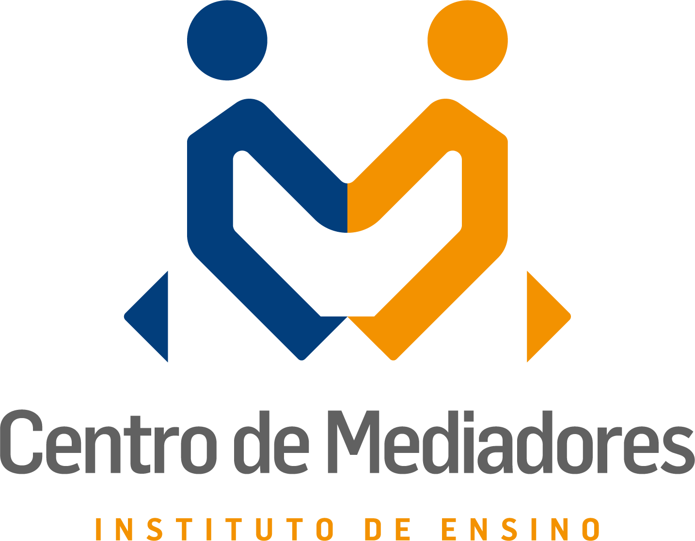

Professional Experience
2025–2025 (6 months) — Computer Science Lecturer
Computer Science, Algorithms, Image Processing, Operating Systems
Pontifícia Universidade Católica de Minas Gerais, Belo Horizonte, Brazil
Lecturer for courses in Operating Systems, Algorithms & Data Structures II, Project & Algorithm Analysis, and Image Processing and Analysis at Information Systems, Digital Games, and Computer Engineering programs.
2024–2025 (6 months) — Systems Developer
Fullstack Development
Tamborete Pay, Belo Horizonte, Brazil
Development of .NET microservices with Ports & Adapters architecture, messaging (RabbitMQ), MongoDB, and Clean Code in a payment gateway. Hybrid work model.
2022–Present (4 years) — MBA Applied Project Supervisor
Academic Guidance, Applied Project Supervision, Educational Consulting
Instituto de Gestão e Tecnologia da Informação LTDA, Belo Horizonte, Brazil
Supervision of MBA applied projects, supporting students’ technical development. Home-office, PJ modality.
2017–2021 (3 years 8 months) — Systems Developer Trainee I, III, Junior I
Fullstack Development
Auge Tecnologia & Sistemas, Belo Horizonte, Brazil
Development and maintenance of web/mobile educational systems, requirements analysis, point function. Frameworks: MVC, REST, JEE. Technologies: Java, PostgreSQL, JavaScript, TypeScript, Angular, Vue, Jenkins, Mercurial. Remote during pandemic.
2013–2015 (2 years) — Technical Support Analyst & Developer
Internship
Prefeitura de Belo Horizonte, Brazil
IT support for PBH systems (DES and NFS-e) and software development in the IT department.
Education

2024–Present — MBA Specialist
Centro de Mediadores
Postgraduate Lato Sensu
Courses in Conflict Resolution, Mediation, Nonviolent Communication.
2021–2024 — Master’s Degree
Graduate Program in Informatics – PUC Minas
Postgraduate Strictu Sensu
Research assistant in predictive behavioral profile models using labeled videos. Python, TensorFlow, OpenCV.
2011–2017 — Bachelor
Pontifícia Universidade Católica de Minas Gerais (PUC Minas)
Undergraduate
Full scholarship through Prouni program, Computer Science degree.
2002–2008 — Student
Instituto de Educação de Minas Gerais
Basic Education
Completed elementary and high school in a public school.
Academic Recognition
Undergraduate thesis published at ACM SAC 2018 (Qualis A1), recognized for innovation and methodological rigor. ICEI officially highlighted this achievement on their website, emphasizing student participation in high-impact events and academic excellence.
Publications
-
2023 — Behavioral Profile & Facial Expressions — ICEIS '23
Proposes an unsupervised method to identify correlations between behavioral profiles and facial expressions in video interviews.
-
2023 — NLP for Archetype Classification — ICEIS '23
Presents a model for classifying organizational archetypes based on Natural Language Processing techniques applied to business texts.
-
2023 — Probabilistic Mapping for Profiles — CBI '23
Develops a probabilistic approach to map employee behavioral profiles based on multiple data sources.
-
2018 — Predicting Resignation via LinkedIn — SAC '18
Explores LinkedIn data to predict employee turnover probability using data mining techniques.